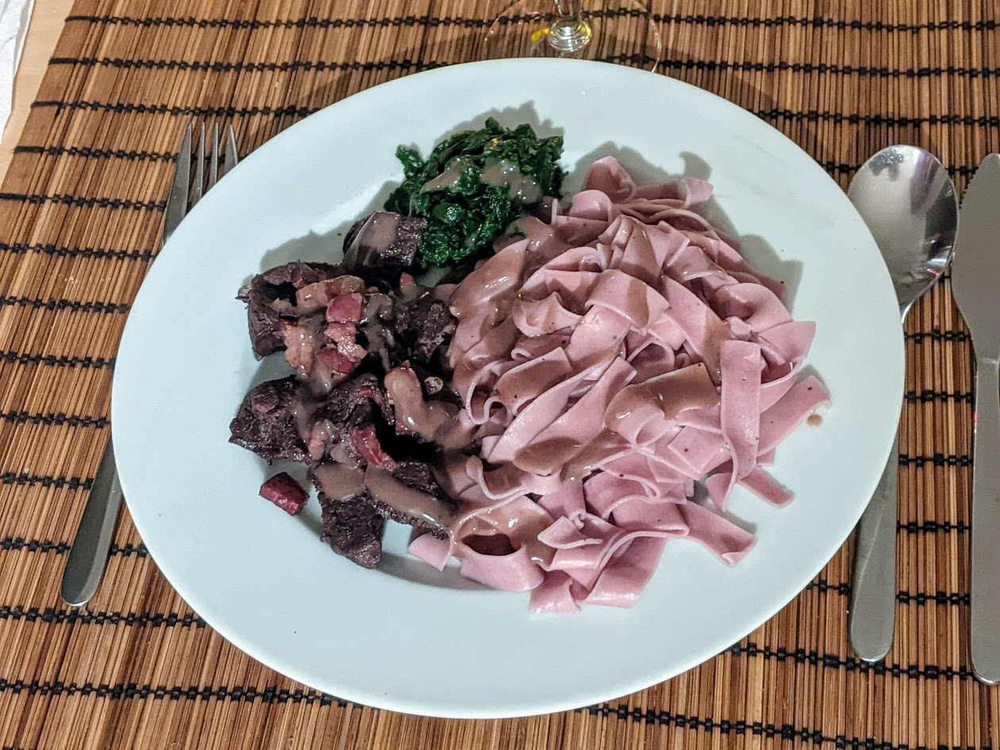

Civet de cerf

Ici avec des tagliatelles aux myrtilles et un peu d'épinards à la
crème
Pour 4 personnes :
- 600-800g de viande cerf à mijoter
- 100g de bons lardons (par exemple, de pancetta coupée en morceaux)
- Un litre de vin rouge (voir remarque en dessous)
- Une carotte
- Un oignon
- Trois gousses d'ail
- Deux feuilles de laurier
- Deux clous de girofle
- Six baies de genièvre
- Une cuillère à soupe de poivre noir en grains
- 80g de farine
- 80g de beurre
- Sel, poivre, huile d'olive, un peu plus de beurre
- Éplucher et couper les carottes, les oignons, et l'ail en morceaux grossiers. Écraser grossièrement le poivre noir au pilon. Mettre le tout avec le laurier, les clous de girofle et le genièvre dans le vin. Porter à ébullition, puis laisser refroidir.
- Pendant ce temps, couper la viande en cubes d'environ 3cm. L'ajouter dans le mélange refroidi, et laisser mariner entre un et trois jours au frais, en prenant soin que la viande soit totalement recouverte (on peut ajouter un poids sur le dessus de la marinade pour aider).
- Retirer la viande de la marinade et l'éponger avec du papier absorbant, en prenant soin d'enlever les morceaux de marinade. Faire chauffer de l'huile d'olive et du beurre (ou deux autres graisses) au fond d'une casserole à feu bien fort, et saisir la viande environ 5 minutes. S'il y a trop de viande pour tout mettre en une couche au fond de la casserole, faire ça en plusieurs fois en ajoutant un peu de graisse entre les portions.
- Pendant ce temps, filtrer la marinade à travers une passoire fine. Preser ensemble les ingrédients solides de la marinade avec les mains pour extraire le maximum de jus délicieux.
- Retirer la viande de la casserole, ajouter les lardons pour qu'ils grillent un peu quelques minutes, puis rajouter la viande et la marinade filtrée. Porter à ébulition puis laisser mijoter une heure et demie à feu doux (il faut qu'il y ait quelques bubulles mais pas beaucoup plus).
- Retirer la viande et réserver à couvert (par exemple dans un four à 80°C). Porter la sauce à ébullition, et pendant ce temps, faire fondre le beurre dans une autre casserole à feu moyen, ajouter la farine, bien mélanger pour obtenir une pâte, et laisser chauffer pour que ça roussisse un peu. Puis, ajouter progressivement la marinade chaude pour faire une sauce délicieuse.
- Servir la viande nappée de sauce, avec de la bonne purée, ou bien des pâtes stylées.
Remarque : un litre de vin pour 600-800g de viande, c'est plus que nécessaire, l'important est seulement d'avoir assez de vin pour recouvrir la viande complètement lorsqu'elle marine. Mais ça devient pas la suite une sauce totalement délicieuse dont on veut se servir généreusement, donc en mettre trop n'est pas un problème ^^ En terme de choix de vin, le civet de cerf s'accompagne bien d'un pinot noir de Bourgogne plutôt jeune, utiliser ce type de vin dans la marinade est aussi une bonne idée.
Retour à la liste des recettes